Georgian Wine Heritage
Rooted in the heart of Kakheti, Akhmeteli is dedicated to the timeless traditions of Georgian winemaking. Crafted in qvevri, shaped by nature, and passed down through generations.
Discover Our WinesInternational Recognition
About the Company
Akhmeteli was born in the heart of Kakheti, where the art of winemaking passes from one generation to the next. We carry on the ancient qvevri tradition — clay vessels buried in the earth, in which wine matures naturally, just as our ancestors did for millennia. Every bottle is the fruit of the Alazani Valley's sun, soil, and craft.
Read our storyThe Place
In the Akhmeta district, where the snow-capped Caucasus meets the fertile Alazani Valley, vineyards have been tended for millennia. Ancient monasteries watch over the plain, and the same soil and sun that shaped this land shape every Akhmeteli wine.
Visit usWhy Akhmeteli
Strict quality control from vineyard to bottle. Every stage protects the purity, consistency, and natural character of the wine.
Award-winning wines that meet the highest international standards — a proud representation of Georgian winemaking on the world stage.
Vineyards set in one of Georgia's finest wine regions, where rich soil, generous sun, and a gentle climate yield grapes of rare depth and aroma.
Crafted from Georgia's noblest varieties — Saperavi, Rkatsiteli, Kisi, Kakhuri Mtsvane and more — each lending its own character and taste.
Made the ancient Georgian way, in buried clay qvevri that preserve the wine's natural structure, deep aroma, and true identity.
Alongside the wines, a traditional Georgian chacha — a strong, characterful spirit at the heart of Georgian hospitality.
Centuries-old craft, natural terroir, and modern quality standards united in products that proudly represent Georgia.
Our Collection
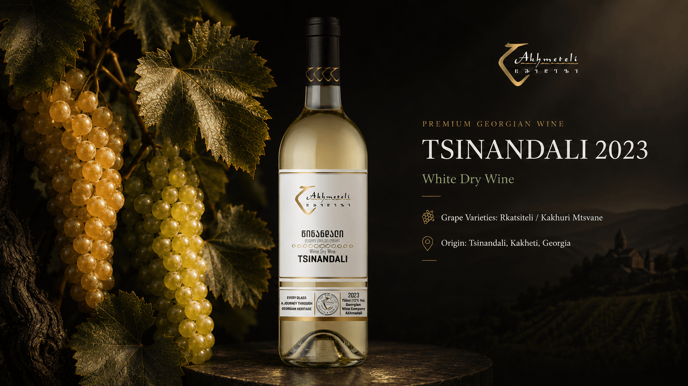
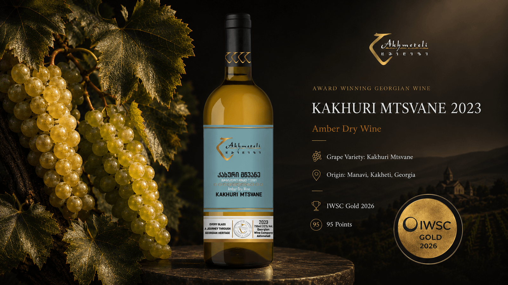
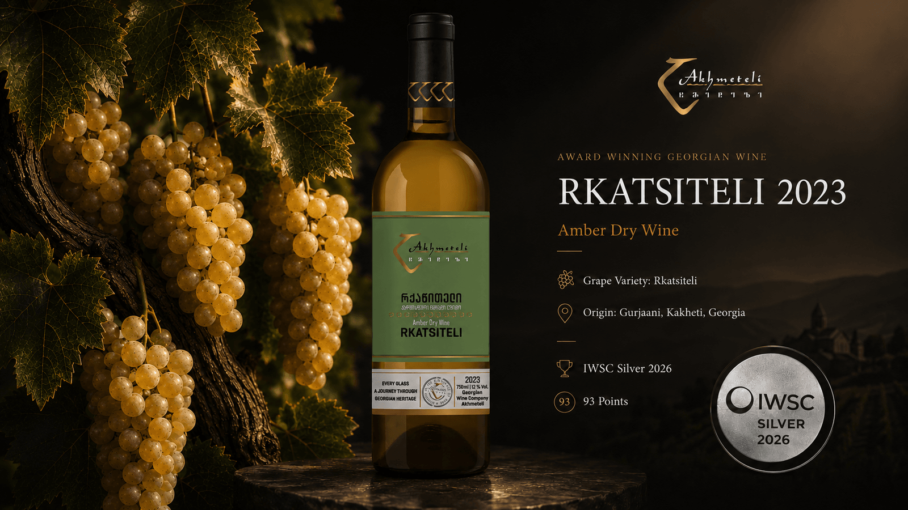
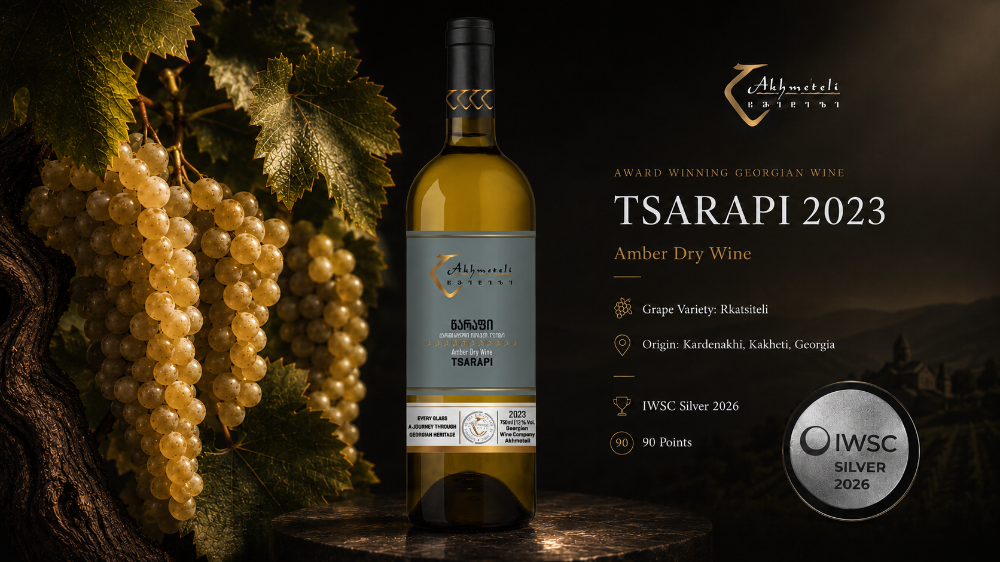
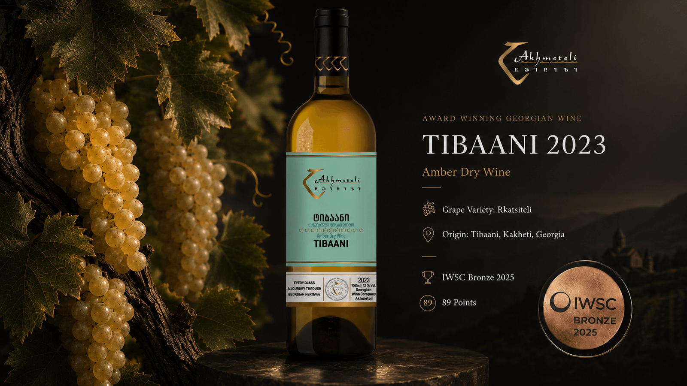
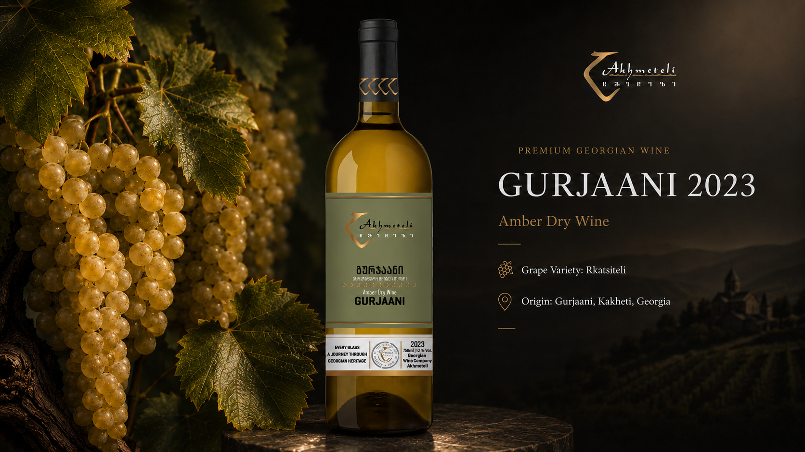
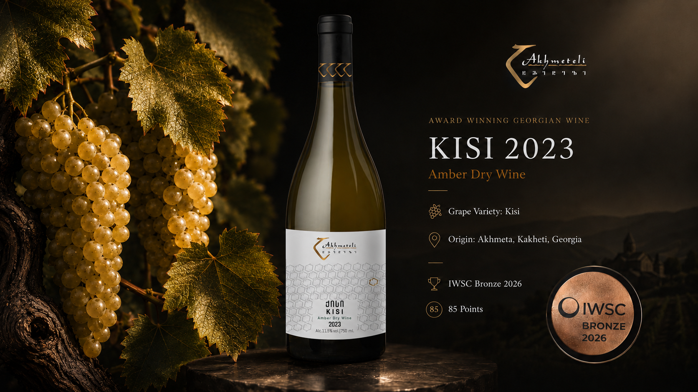
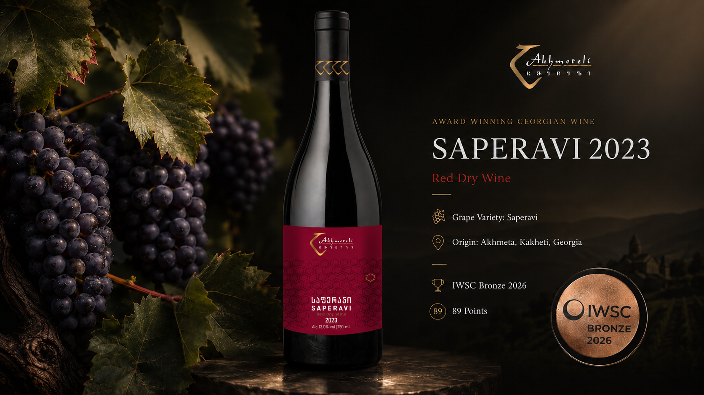
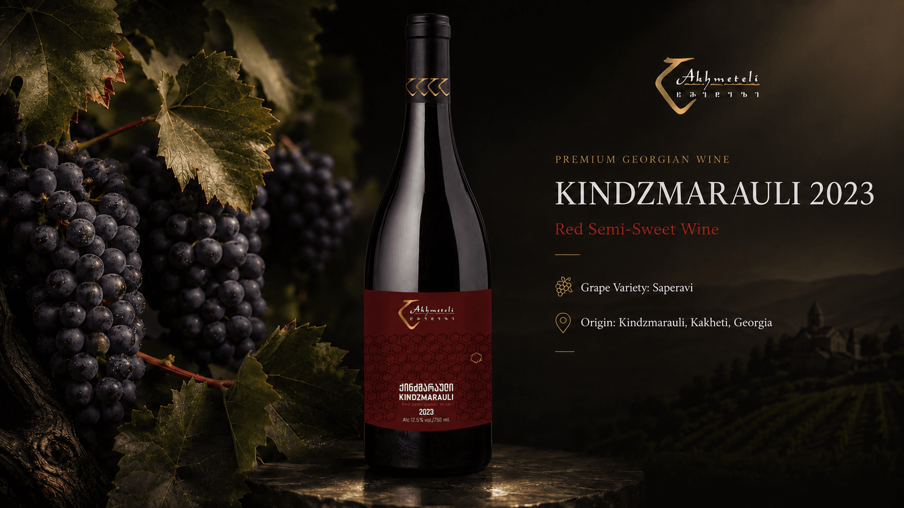
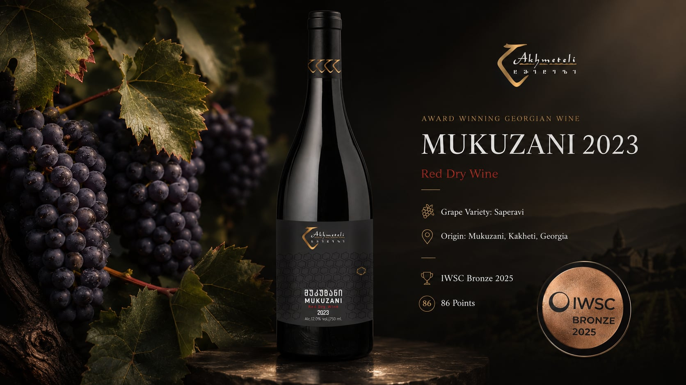
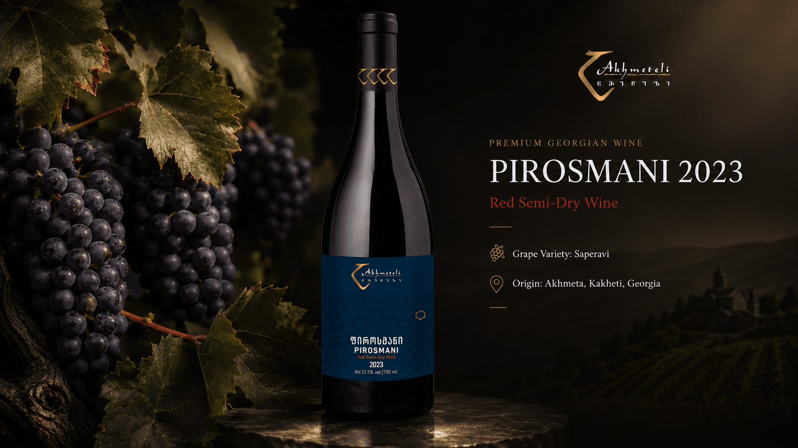
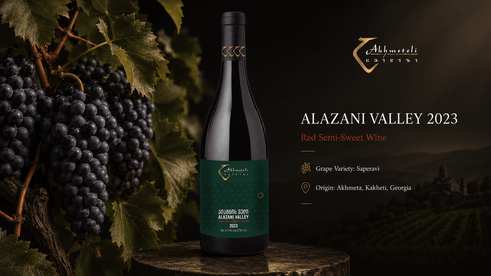
Georgian Spirit
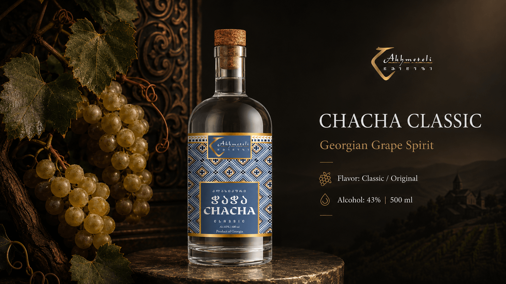
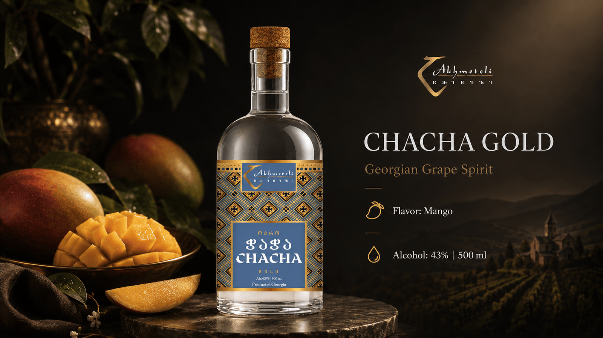
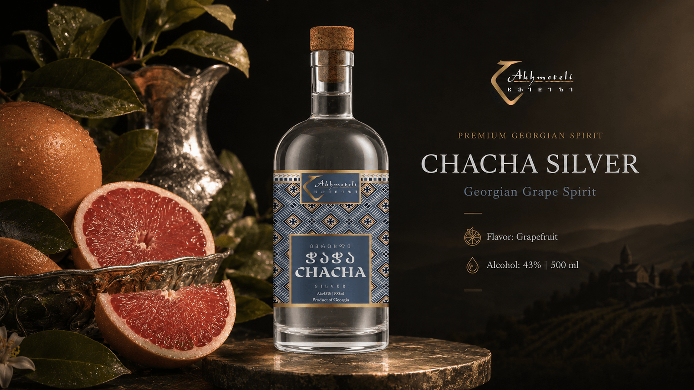
In Their Words
"Every bottle tells the story of Kakheti. The Saperavi is rich, deep and unforgettable — the closest I've come to drinking history."
"We've poured Akhmeteli wines at our restaurant for two years. Guests always ask about the amber Rkatsiteli — qvevri winemaking at its finest."
"Visiting the winery in Akhmeta was the highlight of our trip. Warm people, honest wine, and a tradition you can taste in every glass."
Good to Know
In the Akhmeta district of Kakheti, eastern Georgia — in the heart of the Alazani Valley, where our grapes are grown and the wine matures in traditional qvevri.
Qvevri are large clay vessels buried in the earth, used in Georgia for over 8,000 years. Wine ferments and ages in them naturally, giving our amber wines their depth and character — a UNESCO-listed heritage.
Yes. We deliver across Georgia and arrange international shipping on request. Contact us for wholesale and export enquiries.
Absolutely. We welcome guests for tastings and cellar tours by appointment. Call or message us to book your visit to Akhmeta.
Our wines are made the traditional way — native Georgian grapes, spontaneous fermentation in qvevri, and minimal intervention, so the true character of the vineyard speaks.
Get in Touch
Have a question, a wholesale enquiry, or planning a visit? Send us a message and we'll get back to you shortly.
Akhmeta, Kakheti, Georgia